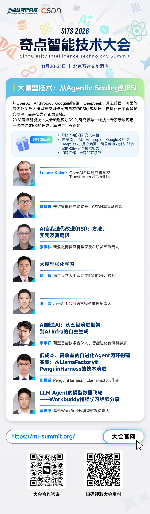

整理 | 何思思
出品 | 奇点折射（ID：rgznai100）
而他真正担心的是更土的事情：AI 实验室自己那些没加固好的基础设施。他创立 Trillium，就是想把这个被闭源实验室讲得神乎其神的概念拉回地面，让外界验证前沿系统的递归能力到底走到了哪一步，以及它做不了什么。
这期 a16z 播客里，Trillium 创始人 Nathan Nathan （内森·兰伯特）和a16z 合伙人李丽莎 (Lisha Li) 的对话从 RSI 滑向了更硬的战场：开源到底能不能跟上闭源，在缺算力的条件下初创AI公司怎么活下去？蒸馏这事到底拦不拦得住。
“中国缺少人才，简直是大错特错，他们缺的是算力。”
Nathan 给了一个很干净的框架：模型进步靠三样东西——算力、数据、人才。美国前沿实验室三样都不缺，中国实验室则被算力上卡住了。他讲了个细节：中国研究者听说一个普通 OpenAI 研究员随手就能调 5000 个 H100 等效算力。
但 Nathan 反复强调的另一面是：中国实验室在这种约束下练出的工程效率，是很多其他国家的团队不具备的。算力差距让蒸馏成了一条现实路径：语言模型的输出本来就是算力的函数，如果你已经知道要什么输出，效果等同于你自己有那么多算力。
“如果中国的实验室只做闭源 API，几乎没人会知道 Moonshot AI。”
这是 Nathan 解释中国为什么选开源的方式。不是理想主义，而是上牌桌。中国实验室清楚美国市场有巨大的付费需求，他们在很实际地跟这个趋势走，这更像一家创业公司在做显而易见的生存选择。开源则是最佳途径，让它们在没有算力优势的情况下，用工程能力换来了话语权。
“服务条款不是一份签署的合同。他们不会停止。”
聊到蒸馏，Nathan 一点没留情面：“你没法像起诉违约那样起诉他们，你只能取消他们的访问权限。”他对国会立法同样不抱希望：“他们不会停止。如果你对蒸馏采取任何行动，造成的伤害将大于好处。”
“前沿实验室没有想象中的封闭，保密几个月可以，长期不能”。
而对于为何 OpenAI、Anthropic 等公司能迅速发展起来，Nathan 并没有夸大其技术的先进性，反而用调侃的语气说道，“我们都是科学家，如果有人取得了突破，他们自然会想把这件事告诉朋友。可能只是一杯啤酒的事儿，他们可能暂时保密几个月，但要长期的话，不太可能。”
在几个具有争议的问题上，Nathan 的回答不煽情：开源会赢在量上，闭源会赢在钱上，RSI 的真相介于营销和恐惧之间。
以下为对谈原文，我们做了删减，各位 enjoy~
自上而下地彻底重构组织，对前沿模型发展很有效
主持人： Nathan，很高兴你能来。感谢你亲自来到现场参与节目。我记得我们之前聊过很多关于开源的话题，而这也是你非常关注的领域。无论是闭源实验室，还是开源模型，究竟是什么推动它们发展到了今天的前沿水平？你会如何拆解其中的因素？或许可以先从更高的层面谈起，比如预训练、中期训练和后训练，以及后训练是如何演变的。
Nathan： 当我思考模型进步时，归根结底就是你为模型投入了哪些不同形式的资本，也就是算力、数据和人才。
各家实验室在这些方面的资源都不一样。我认为，闭源前沿实验室，比如 OpenAI、Anthropic 和 Google 等显然拥有最多的资源。我们看到，各家实验室在如何组织和运用这些资本方面存在着不同能力。
要让组织架构真正服务于模型开发，是一件非常困难的事。这也是为什么有些公司不得不自下而上地彻底重组；而且，有时这样做真能奏效。比如 Meta 就经历了全面重组，后来又重新走上了积极发展的轨道。我对竞争为何能推动技术前沿，以及组织架构为何如此重要这些与人有关的因素，非常感兴趣。我们看到的这些现象，在开源与闭源的竞争格局中同样发挥着作用。
选择开源是初创 AI 公司上“牌桌”的捷径
Nathan：如果有人想从事最前沿的人工智能研究，我通常会建议他们去 Anthropic 或 OpenAI，我认为这两个选择最稳妥。Meta、Google、SpaceX AI 等公司可能也处于这个领域，但从外部来看，要判断它们的实际情况就困难得多。这些公司为了走到今天这一步，很早就做出了最具雄心的尝试。这也是为什么 OpenAI 推动了推理模型革命的开端。
我认为，这种突破，以及那张展示推理阶段扩展规律的漂亮曲线，就是 OpenAI 的高光时刻。他们非常擅长展示一张能够改变所有人思考方式的图表。另一方面，Anthropic 一直非常专注于模型最终能够完成哪些任务，而他们长期专注于编程领域，最终得到了回报：Claude Code 迅速走红。这两家公司有着一些微妙但重要的文化差异。我认为，它们最具备前瞻性，也最愿意投入惊人的资源，去推动那些人们原本认为不可能实现的方向。
中国的公司之所以进入这个领域，是因为它们想打造一家有影响力的公司。如果它们只是在中国开发模型，然后尝试通过 API 出售，根本没人会知道它们的存在。几乎没人会知道 Moonshot AI，也只有很少的人知道智谱，更不用说后面还有一长串公司了。这是一个非常务实的决定。它们紧跟行业讨论，知道这里会形成一个巨大的市场，也知道美国有大量用户愿意为这些服务付费。
因此，发布开放模型就成了一条捷径，能让它们迅速进入行业视野和讨论。我认为，关于它们为什么这么做，外界存在很多复杂的猜测，比如政府是否参与其中。但事实未必如此。它们只是在努力打造一家初创公司。这并不意味着它们最终无法跻身前沿。
中国政府采取的一些行动，会让美国人感到非常震惊。我认为，这也意味着中国的实验室对安全问题可能有着更为严肃的态度，因为在中国，企业做出某些事情后，政府采取的应对措施可能比美国严厉得多。我就不在这里深入展开了。但回到开源与闭源之间的平衡，中国的一些公司正在努力追赶。这与我之前谈到的OpenAI 和 Anthropic 有着截然不同的竞争逻辑。后两家公司试图创造全新的范式，希望率先实现真正的递归自我改进（RSI），这样一来，只要它们最先做到，就可能凭借最好的模型长期保持领先地位。这类公司押注的是一些宏大的理念。
而中国公司更像在填补市场空白，开放权重模型正是它们实现这一目标的方式。我认为，随着时间推移，开放模型会逐渐形成不同的层级。最顶尖的仍然是闭源模型，因为它们可以获得最高的利润率；再往下，是落后前沿一步的近前沿模型，这些模型则可能以开放权重的形式发布。这是一种自然的供需关系演变：开放模型可以帮助公司进入一个利润率可能较低、但不同于原有市场的新市场。例如，某些企业拥有自己的私有数据，需要能够适应这些数据的模型。
开源企业的存续时间
已经远超业界想象了
Nathan： 我们刚才谈到了前沿发展。如果回到资本投入这个角度，中国公司拥有的资本更少，因此赚的钱也可能更少。但这没什么问题。我认为，它们追赶前沿的动力非常强。一旦 Anthropic 和 OpenAI 展示了你需要构建什么样的模型，后来者就更容易明确方向：原来我们只需要把这件事做好就行了。它们还会购买类似的数据集。整个过程会沿着数据经济的产业链逐步扩散。
OpenAI 和 Anthropic 会投入更多资金，推动数据产业发展；一年之后，这些数据公司可能就会把数据卖给其他所有人。它们需要尽可能提高投资回报，而且此前可能存在一定期限的合同约束。这里面有很多复杂的动态，因此，快速跟进其实是完全可行的。
这种循环已经持续了一段时间，比很多人预想的还要久。我记得 ChatGPT 发布时，我们曾讨论过行业整合，并预测这种情况会发生。我认为，现在我们才刚刚开始看到一个更加活跃的并购市场。不过，我原以为这两年前就会发生，而开源模型公司存续的时间比我预想的长得多。
中国人才实力不够，简直大错特错
主持人：这里面有太多值得深入探讨的话题了。我想先从你刚才提到的两家顶级前沿实验室在组织结构上的差异谈起。
其中，一个值得探讨的话题是蒸馏。大多数人都认为，蒸馏是中国团队能够如此出色、而且表现越来越好的主要手段。过去几年，开源模型与前沿模型之间的差距一直在缩小，如今可能只差两到三个月。这也促使前沿实验室考虑关闭 API，不再开放最好的模型，而是把它们用于自营服务。
一方面，这样做可能是为了获取更多商业价值；另一方面，关闭 API 也会让蒸馏变得更加困难。当然，不是完全不可能，但难度确实会高得多。我们先说蒸馏：这种说法是不是有些过度简化了？你与中国的实验室有过接触，也对它们进行了深入研究。那么，它们是不是其实在各个方面都很强，不仅擅长预训练，也拥有自己的优秀后训练方案，只是未必对外公开？你认为，哪些因素正在加速它们的发展？
Nathan： 是的。中国的实验室在技术上非常出色，但我认为，它们面临的主要问题是算力短缺。
毫无疑问，它们拥有可与美国相媲美的人才储备。如果一定要比较，可能会因为人工智能真正兴起时人才所处的位置不同，而存在一点点优势差异。但如果你说中国的人才实力不够，就很难自圆其说，因为中国有太多人接受了极高水平的训练。它们真正缺少的是算力。
你和那里的研究人员交谈时，可以告诉他们：“我听说，OpenAI 的普通研究人员平均随时都能调用相当于 5000 张 H100 的算力。”他们听完下巴都要掉下来了，简直无法想象。而这说的还只是某家知名实验室里的顶尖预训练研究人员。我见过几次类似的反应，所以我认为，算力才是双方最大的差距。
蒸馏真能缩短中美AI差距？
别高估了它的作用
Nathan： 蒸馏也与此有关，因为它是一种有效增加投入、以获得相当于更多算力所能产生的模型输出的方法。语言模型的输出本质取决于算力。如果你已经知道自己想要什么样的输出，那么获取这些输出，就相当于拥有了算力来让模型生成它们。
我观察过不同发展阶段的蒸馏技术。在我看来，早期的后训练更加依赖监督微调，也就是 RLHF 时代的那套方法。后训练最初就是在这样的背景下发展起来的，当时，只要利用一个非常强大的模型所生成的输出进行训练，通过预测下一个 token 的损失函数，就能获得大部分性能提升。当时有一种非常成熟的做法：找到你能获得的最强模型，让它生成回答，然后用这些回答训练自己的模型。只要你能拿到合适的提示词，训练出来的模型通常就会相当不错。
提示词一直都是后训练的关键。我记得在 AI2 工作时，我就负责后训练，我们总是说，提示词是后训练最基本、最关键的单元。你需要先获得提示词，然后在训练的不同阶段以不同方式利用它们。但如今，后训练已经逐渐转向以强化学习为主的环境。问题在于，很难把过去这种后训练方式：获取模型生成的回答，然后不断提高评分，与当今推理模型的训练方式对应起来。
根据公开的研究文献，很难让我相信蒸馏是一个决定性因素。举例来说，在完全开放的研究领域，人们一直尝试开发开放的后训练方案，但所有开源模型的开发者似乎都被困在使用一个相当过时的模型上，因为他们无法弄清楚怎样才能获得合适的模型。
我的假设是，某些中期训练方法，以及常见预训练数据中的某些开放数据，可能让这件事变得很困难。所谓这件事，就是从最顶尖的模型那里获取推理过程记录，再用监督微调进行训练，最终让模型的各项指标提升。所以，假设我在开发模型时，能够获得 Claude 的推理过程记录，比如 Claude Opus、Claude 4、Mythos 之类的模型生成的内容，我也不确定这是否真的能让我们的模型性能大幅提升。
这就是我为什么认为蒸馏很难的一些依据，它们来自现有研究文献。接下来还有一个问题：你如何利用模型的输出构建强化学习环境，并开展大规模强化学习训练？因为像 xAI 这样的公司会进行为期一周的开放式强化学习训练，然后告诉大家自己做了什么，接着发布模型。但问题是，蒸馏究竟在哪个环节发挥了作用？它们很聪明，也很擅长营销。我们会有一些疑问：它们是不是提前完成了某些工作？因为它们先进行了强化学习训练，然后才发布模型，而技术报告又称，在强化学习之后还增加了一个额外的后训练阶段。
这里面确实存在一些疑点。但要把已有的蒸馏研究与它们实际采用的方法对应起来，是非常困难的。不过，也有一些疑点让我对这些实验室的说法稍微更能理解一些。例如，中国存在一些模型代理和模型中介服务，它们会消耗海量 token，也拥有大量账号。甚至曾经出现过这样的情况：Kimi 在自己的产品中向用户提供 Claude 模型服务。我确实不太明白，这些做法如何与蒸馏作为一种常见后训练技术的具体机制对应起来。当然，我们也应该关注这些问题。中国公司大规模使用 OpenAI 和 Anthropic 模型输出的其他异常情况，也值得注意。
所以，我认为还有很多问题需要回答。大多数理性的人在讨论蒸馏究竟能缩小多少差距时，都会承认其中存在很大的不确定性。但当我说蒸馏可以帮助它们缩短几个月的差距时，我的依据是现有的科学研究文献。我们应该开展更多开放研究，让研究人员能够深入分析这个问题。但基于目前的证据，我不知道为什么有人会得出完全不同的结论，认为蒸馏在当下的后训练中具有极其巨大的影响。
归根结底，中国人确实非常擅长构建模型。我认为，有些人其实是在自我安慰，觉得只有自己才懂得如何构建模型。但事实是，已经有很多公司在开发优秀模型，大概有二三十家。你完全可以去读相关资料，看看实际情况。
禁止蒸馏的后果：弊大于利，他们不会停止
主持人： 我记得黄仁勋好像在某条推文或某次采访中说过这样一段话。也许我们可以把它放进节目里。
黄仁勋（画面引述）： 每天都有人蒸馏我的产品。他们拿到产品后，把它拆解成最原始的组成部分，并对所有东西进行测试。这就叫竞争。
主持人： 你觉得这种做法可以接受吗？你认为蒸馏不算掠夺吗？这就是竞争？
Nathan： 我很能理解这种观点，因为人工智能安全社区一直在呼吁美中之间展开对话，而现在人工智能已经发展到了如此高的能力水平，我们确实需要这样的对话。如果你要求企业不断打压本国的人工智能产业，对蒸馏行为施加越来越多的惩罚……
主持人： 所以，你的意思是，国会不会通过立法来监管蒸馏，而是由联邦政府采取一些行动，让这些公司的日子变得不好过？
Nathan： 对，与此同时，我们还在讨论如何管理前沿人工智能带来的风险。闭源模型在训练过程中会不断访问互联网，接触各种不应该接触的内容；我们也确实有理由担心开放权重模型会带来什么后果，尽管到目前为止，这方面还没有出现明显的危害。
但我们也应该思考，为什么人们会选择闭源模型，并想办法绕过它们的安全防护，而不是直接使用开放权重模型？我们希望能够与中国的科技公司进行沟通，共同讨论这些问题。我只是觉得，如果对蒸馏采取任何强硬措施，最终造成的伤害可能会大于好处，因为它们不会停止。说到底，它们还是会继续这么做。
开源市场经济不是泡沫
很可能抢占前沿模型市场
主持人： 对，开源社区也会从中受益，因此初创企业也能获得很大的好处。我们可以深入探讨这个问题。它其实不只是中美之间的竞争。我也能理解前沿实验室的立场，甚至可以说，我试着站在它们的角度思考：构建这些前沿模型需要投入前所未有的巨额资本，如果开源模型通过蒸馏或其他相关方法迅速追赶上来，那么这种持续推动发展的飞轮可能难以为继。这确实令人担忧，也不利于这种良性循环持续运转。
另一方面，中国的开源模型对初创企业生态系统有着巨大的帮助。有些公司尝试过大量微调工作。现在有很多初创公司提供不同形式的后训练服务，并试图将这些服务产品化，而且这种模式确实行得通。因为借助 Kimi K3、GLM，或者你喜欢的其他开源模型，你就有机会达到生产环境中可实际使用的前沿水平。
所以，综合考虑这两方面，你认为未来几年竞争格局会如何发展？谁会胜出？而这又与你自己致力于开源的原因有什么关系？
Nathan： 开源模型和闭源模型的发展，实际上处于不同的指数增长周期。闭源实验室的各个环节高度整合，拥有高效的推理系统。当模型准备就绪时，它们能够依靠充足的资源，大规模提供模型服务。它们可以提前规划，并率先进入价值非常高的市场。
编程领域就是一个例子，也是今年最引人注目的发展故事。相关收入几乎是从零迅速增长到了千亿美元规模，而且很可能还会继续增长。
开源模型实验室则有所不同，部分原因在于经济结构上的限制。作为快速跟随者，它们无法获得同样的信息流，也无法拥有同样的收入流。开源模型生态系统中，有模型开发者、负责推理服务的公司，以及专门提供后训练服务的公司。模型的客户会提供非常重要的信息，例如模型需要完成哪些任务。但这些信息很难顺畅地反馈给模型开发者。
与此同时，开源模型公司也缺乏足够的规模经济，无法像大型闭源实验室那样服务大量用户，也难以同样高效地提供服务，更难在推理服务上获得同等的利润率。这一切都需要更长时间才能发展成熟。
不过，如果某些能力逐渐成为标准化商品，情况就会有所不同。现在，很多企业似乎都希望拥有私有数据。有许多信息，它们根本不能通过 API 发送出去。至于零数据保留政策是否足够可靠，我们也可以进一步讨论。
企业需要花很长时间，才能弄清楚自己是否具备内部专业能力，或者能否建立真正与收入挂钩的内部评估体系。接下来，它们还得研究如何微调模型；或者，它们会去寻找 Thinking Machines、Prime Intellect 这样的公司，并告诉对方：“如果我们能微调出一个解决这个问题的模型，就有机会大规模赚钱。”
这些公司确实有客户，但参与整个过程的企业实在太多了，因此推进速度会慢得多。
不过，在这个过程的终点，它们将真正拥有模型的所有权：拿到模型权重，不再受服务条款的限制，还可以在自己的硬件上运行模型，并且已经弄清楚如何从中获得投资回报。
这就是为什么我认为，开源模型经济需要更长时间才能建立起来。我也不太担心这个市场只是一个泡沫。随着人们逐渐弄清楚如何找到完成特定任务的最低成本模型，以及如何通过利润率展开竞争，开源模型可能会逐步侵蚀那些发展极快的前沿模型所占据的市场。
不过，我也确实不知道最终会发生什么。我认为，现在下结论还为时过早。
前沿模型进步的最大谎言
泛化能力是主要抓手
主持人： 是的，这真的很难判断。这始终是我非常关注的问题。接下来，我想问的是：在判断前沿模型与开源模型之间的竞争格局时，你认为哪些证据最有说服力？哪些证据最能支持我们对未来平衡状态的不同判断？
Nathan： 我一直认为，对于那些无法完全验证结果的领域，前沿模型取得的许多进步，都来自购买高质量数据，并为模型提供可以采取行动、不断探索的环境。
我认为，这里有两种不同的情况。一种是数学和编程，我们还不知道编程市场最终会有多大。另一种则是其他所有领域，包括知识型工作、生物学、医疗保健、法律等等。这些领域的结果不像数学和编程那样容易验证。
我认为，这更接近于 OpenAI 大量购买机器人数据所体现的模式。它们可能会告诉我们，这一切都是模型泛化能力的神奇体现。但现实中，进步很可能一部分来自泛化能力，另一部分来自专门的数据，而很大一部分最终都归结于数据本身。
当我和前沿实验室的员工交流时，会发现其中一些人的工作非常出色；也有一些人只负责非常具体的任务：为某个领域建立数据集，确定模型在该领域应该表现出什么行为，再设计能够促使模型产生这种行为的数据。同时，他们还要判断需要购买哪些数据。
我认为，未来几年，这种模式会在不同产业中持续发展。而购买所有这些数据需要投入大量资本。
但这并不意味着某种神奇的递归自我改进（RSI）会突然发生。与此不同，在数学、编程以及某些分布式机器学习工程领域，任务结果是可以验证的。你知道自己的成本是多少，而 AI 模型能够以惊人的速度降低这些成本。这会带来大量额外收益，也能让我们更快开展研究。
四年后，模型使用成本是原来的1%
我非常关注模型效率的发展。我认为，随着时间推移，模型的使用成本会以倍数级的速度持续下降。我们已经看到 OpenAI 大幅降低价格。那么，如果 GPT Soul 或 Astra 这样的更大型模型，在未来三年里每八个月就降价一半，会发生什么？
你开始计算就会发现，四年后，它们的成本可能只剩下原来的百分之一左右。
但问题是，这些公司能否通过需求增长维持更高的利润率？还是说，随着市场逐渐饱和，它们的收入反而会下降？这里面存在许多复杂而微妙的动态。
不过，从根本上来说，AI 的进步主要取决于两件事：数据，以及编写更好的软件来为模型提供服务。这实际上是两个非常不同的领域。
数据工作偷工减料，会诱发奖励作弊
主持人： 是的，至少从外部观察，我完全同意你的看法。目前有很多提供数据和强化学习环境的公司发展得非常好。所以，我也想听听你对两种数据获取方式的看法：一种是人工构建的数据集和环境，另一种则是在模拟环境中生成的数据。它们似乎有不同的价值，也可能获得不同的价格。每种方式都有自己的优缺点。
我们之前谈过蒸馏，另一种值得关注的情况是：中国公司购买了某种强化学习环境，而六个月后，其他公司也开始购买同样的环境。
Nathan： 没错。比如 Anthropic 会说：“哦，这个东西我买过了。现在它有溢价了。”高质量的数据确实可能带来这样的效果。
不过，企业购买的数据存在不少缺陷。我会说，常见的做法是先大批量采购，再慢慢找出哪些数据真正有效，而不是每次采购都能命中目标。
主持人： 是的。我个人认为，强化学习环境市场的爆发，以及其中巨大的赚钱机会，吸引了很多人进入这个领域，但其中一些人可能会偷工减料，进而导致奖励作弊之类的问题。
Nathan： 没错。现在的模型非常聪明。如果你把它们放进一个环境里，告诉它们要完成某项任务，它们就会想办法获得高奖励。但如果环境本身有问题，比如你给模型提供了一个测试文件，而这个文件实际上是空的，里面根本没有需要它们穿越的迷宫，那么模型就可能会想：“既然如此，我还是得想办法拿到高奖励。”
我认为，这类行为在很大程度上源于整个数据供应链的问题。不过，我相信这些问题最终会得到解决。
有意思的是，各家实验室都在努力消除奖励作弊问题，研究人员为此花费了大量时间；但与此同时，数据公司却在不断宣传：“来买我们的数据吧！”而我认为，相比于研究模型的行为，这些公司投入在构建环境和创造收入上的精力可能更多。
最终，这两方必须更好地协作，才能真正生产出质量更高的数据。
数十亿美元砸向数据，质量却问题重重
主持人： 是的。不过，很多实验室实际上正在把这类工作部分（数据）转为内部完成，因为他们不希望数据泄露。这里说的泄露，既有字面意义上的，也有比喻意义上的。他们不希望外界通过某些信号察觉自己正在做什么、正在推进什么。不过，尽管如此，我认为实验室在这方面的采购规模仍然有巨大的增长空间。你觉得这会不会是推动增长的最强劲因素之一？你能不能大致估算一下，这方面的投入会增加多少？你认为随着支出增加，这种增长还会持续吗？还是说，还有其他因素？
Nathan： 我到现在其实还是有点不愿意相信这件事。我总觉得这些数字太夸张了，居然要在环境上投入数十亿美元的研究预算。但我想，他们之所以这么做，肯定是因为这确实对模型有帮助，而且他们看到了明确的效果。我总体上的观察是，数据行业在提升数据质量和改进操作安全性方面，还有很多改进空间。仔细看看就会发现，数据公司存在一些很奇怪的问题。比如，有些公司会雇用海外承包人员，而这些人是通过中间机构参与工作的。他们甚至不知道自己处理的数据最终会被出售，只是把数据上传到了 GitHub。只要深入调查数据行业，就会发现许多这样粗糙、不完善的环节。
而且，这个行业仍处于非常早期的阶段。一方面，投入的金额大得惊人，数据质量却不够好；另一方面，实验室的进步速度很快，也知道如何把这些数据整合进自己的工作流程。所以，我认为，这需要几年时间才能完成转型：真正筛选出优秀的供应商，帮助他们提供质量更高、投资回报率更高的数据，同时利用更完善的系统减少所需资源。这样一来，实验室就会继续与这些供应商合作，因为它们能获得更多训练信号，也不必再投入那么多精力进行内部筛选。我觉得，这一切都需要好几年才能逐步实现。
RSI 的神秘面纱早该被揭开了
主持人： 我在你们的公告文章中看到了 RSI，也就是递归自我改进（Recursive Self-Improvement）。这个话题确实很值得探讨。我们可以先聊聊，它究竟在什么意义上具有“递归性”，到底有多令人担忧，以及我们是否会迎来所谓的智能起飞。我觉得你对此有一种相当务实、立足现实的看法。
我还想谈谈另一个问题：我认为，RSI 之所以受到如此多的炒作，可能也是我们担心前沿实验室会迅速拉开差距的原因之一。事实上，我不止一次听人提到，有些研究人员已经确信，自己的研究工作最终也会被自动化取代。
Nathan： 是的，确实如此。过去几年里，我亲眼见到一些最好的朋友经历这种焦虑。我会对他们说：“你们是这个领域里最优秀的人之一。”可他们去工作时却会跟我说：“Nathan，我现在真的很挣扎。我接下来到底该做什么？”
正如你所说，他们所做的很多工作都是可以验证的。但与此同时，也存在大量无法轻易验证、或者超出模型训练分布的任务，例如 AI 对齐，以及类似的研究问题。
我听过一种观点：RSI 在提升模型能力方面取得的进展，与它在 AI 对齐方面的进展之间，存在着很大的差距。对齐涉及更多分布外任务，可能需要更具创造性的工作。也许，这种差距能让人稍微安心一些，让我们在讨论潜在风险时更加冷静。
主持人：无论如何，我很想听听你的看法。我认为，建立一个开放的研究前沿、展示 RSI 究竟是如何实现的，非常重要。这样我们能更好地理解它的实际能力。如果某个实验室拥有更好的模型，它究竟有多大可能因此迅速领先其他实验室？
Nathan： 我认为，不会只有我们在做这件事。RSI 现在带有太多神秘色彩，但实际上，我们已经在用模型处理各种各样的工作了。像我们这样的开放实验室和非营利组织，还有其他一些机构，例如 Luther、Hugging Face，以及由 Marin 和斯坦福大学相关团队推动的 Open Athena，都有机会参与其中。
对他们来说，这也会是一个很好的宣传方向。至于我自己，我们可以公开分享正在使用哪些工具。我们会构建一个开源技术栈，用于监督微调（SFT）和中期训练（mid-training）。我们会使用 SkyRL、Miles 等工具，也会公开我们的任务设置和配置，说明使用了什么类型的计算资源。我们可以与云端模型、GPT 以及其他模型合作，并保存整个实验过程中产生的轨迹数据。
我们可以告诉大家，实验中使用了哪些任务，是否使用了 Linear 之类的热门工具，以及我们为什么选择这些任务。我们也会公开模型在这些任务上的表现，以及它们是否能够顺利完成任务。你只需要让一个实验室持续这样工作一年，然后把成果公开出来，告诉大家：“这是我们做过的事情。”之后每隔六个月更新一次，看看情况有没有变化。
如果能够公开完整的技术栈，我们就不必再依赖各种分类器，试图从模糊的外部迹象中猜测实验室到底在自动化什么。凡是能够分享自动化工作进展的人，都应该这样做。我们的任务分布可能与其他实验室不同，但我认为，研究方法本身其实很相似。
我在 AI2 做过的人工智能研究，以及我们未来在 Trillium 要开展的研究，与其他一些研究团队或实验室正在做的工作，并没有本质上的区别。其他人拥有更多资源，可以把规模扩大，仅此而已。
当所有人都在讨论这个问题时，能够公开展示实际情况，对整个世界都非常有益。我们可以直接告诉大家：“这是 Nathan 让模型做的事情，而这就是模型卡住的地方。”这甚至能帮助政策制定者真正理解问题。他们可能会说：“哦，原来如此。它就是在这里卡住了。”他们会看到模型究竟在哪一步遇到了困难，以及模型在代码中引入了什么错误。
随着时间推移，这些错误以及模型在某些任务上追赶进步的过程，都会逐渐改善。但我认为，模型能力仍然会呈现出一种参差不齐的特点：有些方面会迅速突破，另一些方面则不会。
就像我之前提到的效率问题，我确实认为模型会非常擅长降低推理服务的成本。这些公司有数十亿美元的利益与此相关，而模型又确实擅长优化这类问题。因此，通过提高服务效率、调整架构，它们将能够赚到很多钱。
但这并不意味着模型就能直接解决所有知识工作的问题。你不能简单地对 Claude 说：“Claude，想办法让你自己做出更好的 PowerPoint。”对于环境设计或其他类似任务，真正取得进展仍然需要时间。
新入局者有的是机会
承认自己模型不好不是丢脸的事儿
主持人：你觉得开源团队有没有机会开展预训练？预训练的价值究竟在哪里？
Nathan： 预训练科学其实相当成熟，相关工具也很容易获取。你可以建立一个预训练规模递增的实验阶梯，也就是逐步扩大模型规模，借此判断自己的想法能否随着规模增长而奏效。
预训练数据并没有像环境数据那样发生巨大变化。粗略来说，预训练就是在互联网上的数据上训练模型。当然，其中有很多细节和一些不公开的技巧，但整体而言，这方面并没有太大变化。真正不断变化的是最先进的模型架构和 GPU 硬件。
不过，要训练出一个相当扎实的预训练模型，并不需要花费天文数字般的资金。我认为，你不必投入十亿美元才能得到一个非常优秀的基础模型。投入越多，模型通常就会越好，但人们一直在取得进展。我经常会惊讶地发现，一家新的实验室居然可以从零开始训练模型，而且他们真的有能力做到。有些工作甚至是基于开源工具完成的。
比如 Megatron 这样的工具就可以作为基础。很多新创公司会说：“我们应该训练什么模型？”然后直接基于开源工具开始训练，接着把代码分叉出来，改造成自己的版本，之后就再也不公开了。
事实上，许多知名的开源模型实验室都做过类似的事情。它们拿走开源代码，把它改造成自己的系统，但其中很多团队并不会把改进后的代码贡献回上游项目。
所以，我一直对此感到惊讶。我并不认为新进入者没有机会。毕竟，想要训练出一个有竞争力的模型，并不意味着你必须拥有一百亿美元。
真正困难的是，如何训练出一个好到足以让人们愿意使用的模型。
另一个难点是，你需要讲出一个足够有说服力的故事，让自己在发布模型后能够顺利完成下一轮融资。你必须突破这样一道门槛：第一个模型必须成功站稳脚跟。如果你的整家公司都建立在“我们的模型是最好的”这个前提上，但实际模型却根本达不到那个水平，而且你又迟迟不发布产品，那么你就会承受巨大的时间压力。
我想到 Thinking Machines 这家公司。他们发布 Inkling 时表现得非常坦诚。他们会直接说：“这不是我们最好的模型，但我们为它感到自豪，它有一些很棒的特性。”
现在，他们已经发布了第二个模型，业务也逐渐走上正轨。他们的 Tinker 产品也取得了不错的进展。这对他们来说是件好事，意味着公司已经成功起步了。
不过，我不认为这原本就是他们的计划。他们确实在开发模型，但一开始并没有把开源模型作为首要目标。后来，他们才逐渐走到了这一步。
另外，外界也有传闻称，Meta 计划再次发布新的开放权重模型。未来应该还会有这样的产品出现。实际上，有很多公司根本没有能力自行承担训练模型的成本。
预训练更容易入门
后训练是一片没有规则的西部荒野
主持人：希望他们能够继续有动力这么做。至于通过预训练达到前沿水平，我觉得现在有这么多优秀的开源模型，确实提供了很大的帮助。我们或许可以基于这些模型继续发展，逐步建立自己的能力。
不过，我一直收到相互矛盾的信号，不太确定预训练到底是不是已经趋于饱和，或者说，我们对它的理解究竟有多深入。也许正如你所说，确实有很多成熟且已知有效的技术，但真正困难的是获得两万到三万张芯片的计算资源。
Nathan：人们一直在持续投入计算资源进行预训练。随着超长上下文生成能力的发展，预训练的收益结构也发生了变化。现在，如果你能让某种稀疏注意力架构同样有效，那么回报可能会大得多。举例来说，如果你能让十万 token 的生成速度提高 40%，那就会带来非常显著的收益。
所以，我认为，整个技术栈正在共同演化。实验室有自己的预训练技术栈，但它们逐渐发现，推理阶段的规模扩展能够带来更高的收益。与此同时，预训练本身的基础技术也在不断进步。即使只是让模型架构略微改善，也可能带来相当可观的投资回报。
而且，预训练与后训练之间的界限也越来越模糊。中期训练就是一个例子：你开始培养模型的推理行为，从旧模型中提取这些行为，再对它们进行强化学习。整个循环比单纯的预训练复杂得多。
我认为，如果没有合适的人才，想把这样的流程真正建立起来，会比开展预训练困难得多。相比之下，预训练反而更容易入门。你可以相对直接地说：“我们就从头开始预训练一个模型吧。”但如果你对语言模型还不太了解，却想直接弄明白整个后训练流程，那就像走进了一个尚未建立规则的西部荒野。
主持人： 是的。这也是为什么我离开 AI2 时，觉得我们的后训练工作实际上已经开始落后了。主要原因是我们的迭代周期不够快，而整个领域又正在转向智能体相关的工作。即便如此，我们当时使用的仍然是一些领先的开源后训练方案。
这正是我想要改变的事情：要想在现有技术水平上取得大幅、持续累积的进步，并推动开源生态的发展，其实不需要那么多资本，因为目前的门槛还很低。关键在于如何更有效地配置资金，从而产生巨大的影响。
Nathan：是的。而且，这也与整个后训练领域有关。闭源实验室和开源团队之间可能出现差距，其中一个原因是，它们使用的智能体框架（harness）非常不同。闭源实验室不仅使用特定的框架，还会专门针对这些框架对模型进行训练和后训练，让模型能够在相应框架中发挥最佳表现。这就让整个过程显得更加神秘，也让外界更难理解。
前沿实验室没想象中封闭
保密几个月可以，长期不可能
Nathan：我认为，开源最终应该能够跟上。几年前，我曾经认为，闭源实验室会像苹果公司一样，成为一家高度整合的公司：模型会专门针对其使用的框架进行设计，从而获得规模经济和效率优势。
但实际情况是，不同的人想用不同的框架完成不同的任务。因此，模型公司受到市场压力，不得不让自己的模型能够适应各种不同的框架。
我原本以为，这会成为开放模型的一个弱点，因为它们必须被训练成适应各种各样的框架。但最终，市场似乎达到了某种平衡：所有模型都必须在一定程度上适应不同的框架。
至于现在出现的智能体集群，我认为 OpenAI 和 Anthropic 会更早掌握相关技术。他们会更清楚如何设计模型，也会更早知道如何为大量智能体集群设计相应的框架——或者说，我们究竟应该给这种系统起什么名字。我也不知道。总之，我们最终会找到一个合适的词。它可能已经不再是传统意义上的 harness，而更像一个协调系统。
但最终，其他人也会希望使用这些技术。接下来就会形成一种循环：前沿实验室率先推出新技术，并从率先行动中获得巨大收益。我们还不完全清楚，这种领先优势究竟能带来多大的回报。比如 Navier-Stokes 之类的研究成果，其实际价值到底有多大？我们并不完全清楚。
前沿实验室会不断推动技术边界，因为它们相信，率先突破能够带来丰厚回报。它们认为，哪怕只是让智能水平提高一点点，也可能产生不成比例的巨大收益。我们还不知道这是否始终成立，但我预计，这种循环会反复出现。
一旦人们弄清楚如何在一个框架中控制一万个智能体，开源模型公司就会说：“哦，我们也能做到。”不过，像 Timmy 这样的团队不太可能最先实现这一点，因为他们首先就缺乏所需的计算资源。
主持人： 是的，这需要天文数字般的计算资源。
Nathan： 没错。但技术发展总是以循环的方式推进。英伟达的芯片会变得快得多，整个行业也会建设更多计算基础设施。
主持人： 所以，你相当确信，这些实验室并没有太多完全隐藏起来、外界根本无法推测的技术。我们大概可以猜到他们正在做什么；等到这些技术变得足够重要时，开源模型也能够尝试采用类似的元框架进行后训练，无论我们最终给它们起什么名字。
Nathan： 是的。而且，我认为这些实验室在信息安全方面的实际水平，可能没有它们自己想象的那么高。硅谷有句老话，创意传播得非常快，可能一起喝杯啤酒的工夫，想法就传开了。大家下班后会互相聊天。
但总体而言，我们都是科学家。如果有人取得了突破，他们自然会想把这件事告诉朋友。他们可能会暂时保密几个月，但要长期阻止知识传播，所需要的信息安全措施实在太严格了。
要把这些事情一直保密，是很困难的。
前沿实验室真正能够建立优势的地方，是将更多推理计算整合进基础设施，从而以更低的价格提供服务、获得更高的利润率，并在更长的时间里维持这种优势。
因此，我非常有信心，前沿实验室能够提供最便宜的智能服务，也就是以每瓦特或每单位计算资源为基准，提供成本最低的智能。
它们会进入需求最旺盛的市场，并在那里提供价格最低的模型。这对它们来说会是一门很好的生意，也会增加收入。
但问题在于，它们不可能包揽所有事情。其他经济活动就会在这个空间里发展起来。
例如，如果只有编程能够盈利，那显然会非常有利于前沿模型公司，因为它们拥有最好的模型和最完善的整合能力。但如果整个知识工作经济都成为潜在市场，情况就不一样了。它们能同时做好所有事情吗？实际上，它们也不一定需要做到这一点。我认为，未来会有很多赢家。
前沿实验室需要投入指数级资源
才能维持现在的速度
主持人： 我很喜欢你对 RSI 的看法。正如我们刚才讨论的，你是从实际角度出发，指出这类进展需要指数级增长的成本和资源消耗。因此，前沿实验室能够拉开多大差距，显然也存在一定的限制。你还有什么想补充的吗？
Nathan： 我认为，现在有大量资金正在投入推理阶段。短期来看，我们正在学习如何把更多推理计算转化为实际性能提升。这就是我们现在正在经历的事情。
前沿实验室正在投入巨额资金，员工也在努力推动进步。它们的支出增长速度呈指数级，而模型能力的提升相对没有那么快。不过，我们正在逐步弄清楚如何更有效地做到这一点。我相信，这会带来很大的进步。
但我不认为，这必然会演变成一种快速起飞的局面，也就是模型开始自我构建，然后能力突然失控式增长。人类仍然是瓶颈。
现有的规模定律大致表明，计算资源呈指数级增长，而性能则相对呈线性增长。要否认这种趋势，我觉得很难。
不过，我也想强调，Navier-Stokes 这类数学问题可能非常适合这种智能形式。我甚至认为，数学可能是最适合当前这类智能的科学领域。智能可以有许多不同的形式。
当然，如果 AI 模型发现了一种与 Transformer 非常不同的新架构，而且这种架构带来了完全不同的特性，解锁了一种新的智能形式，那么我们就应该根据新的证据更新自己的判断。到那时，我们应该承认：“好吧，这确实是不同的情况。”
但在这种事情发生之前，我对现有证据还是相当有信心的。这些公司确实能够取得很好的成绩，但为了维持目前这种惊人的进步速度，它们需要投入呈指数级增长的资源。
一些 Claude 系统卡也提到过类似的观点：如果要实现快速起飞，可能还需要在当前基础上取得十倍的进步。
就目前而言，这些投入是在帮助我们维持现有的进步速度。我认为，这是一个相对合理的平衡状态。
不过，我也听到实验室里的人说，科学本身存在很难克服的限制。这个观点并非没有道理，只是我们仍然不知道未来究竟会走向何方。
担心的不是 RSI 的到来
而是已经存在的 AI 风险
因此，希望开源生态也能继续保持强劲的发展势头，不至于被远远甩在后面。
Nathan： 但我们仍有大量工作要做，尤其是在基础设施和社会准备方面。
AI 能力增长的曲线本身并不是最让我担忧的事情。真正让我担忧的是，AI 能力正在增长，而公共部门的网络安全准备几乎不存在，其他相关领域的准备工作也严重不足。
我们应该比现在更加积极地为这种未来做准备。
相比于担心 RSI 即将到来、解锁某些全新的风险，我更担心的是那些已经存在、并且会持续扩散的风险。很多时候，闭源实验室会先达到某种能力水平，随后开源实验室也会达到。对于许多可能引发问题的技术，我们正处在这样一个逐步扩散的过程中。真正困难的是，如何让整个社会做好准备。
现在我逐渐形成了这样的看法：我们需要更多人参与观察，也需要更多科学研究，让整个社会能够充分了解正在发生的事情。
当然，也存在其他合理的观点。但我确实认为，不担心快速起飞，并不意味着我们就不需要担心 AI 风险。
主持人： 完全同意。Nathan，非常感谢你今天接受采访。这次对话真的很有意思。我也非常期待 Trillium 正式启动之后，接下来会开展哪些工作。
Nathan： 谢谢。
参考链接：https://www.youtube.com/watch?v=BKuK0M6oDTI
同时，我们整理了 《RSI（递归自我改进 / 自进化）前沿研究资料包》，汇总 OpenAI、Anthropic、Google、DeepSeek、智谱、Kimi、阿里等最新论文、官方技术报告与研究出处。
👇 扫描下方海报二维码，领取 RSI 前沿资料包，并了解专题参会详情。
